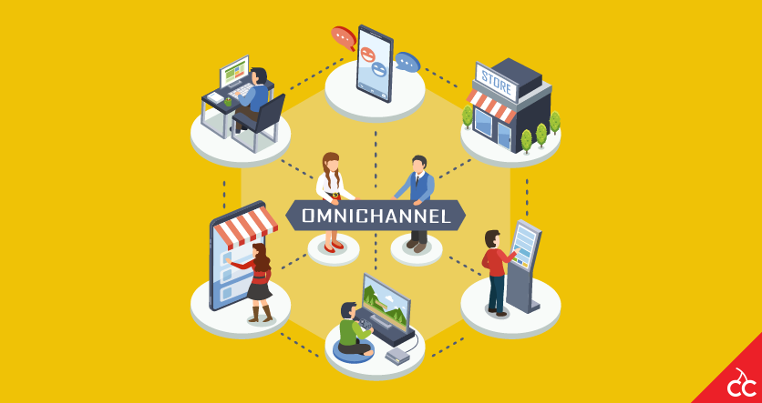

Apr 14, 2019

Omni channel logistics or Omni channel order fulfilment strategy that Allows companies to deliver goods to multiple channels using a single facility i.e. working with a single workforce and delivering from just one location. It is a cross-channel strategy to improve user experience, provide them with more facilities.
In this process they use a single inventory channel and dictate their order size, delivery requirement, order fulfilment, packaging, and shipment and handling storage. This strategy seek to improvise the logistics services far more better by synchronizing inventory, logistics and distribution across all the sales channels. As all the sales channels get active, the delivery speed becomes a lot faster and a lot cheaper.
Consumers expect their delivery to anywhere and anytime. And that is why, companies come up with these strategies to meet their expectations. It can enhance speed, flexibility, reduces cost and personalizes the shipment.
The Omni-channel flow paths are as followed:-
1. Order online/deliver to customer
2. Order online/pick up at store
3. Order online/deliver from store
4. Order online/return to store
5. Select and pickup at store
With all this retailers are continuously using warehouse management systems to support and expand the Omni channel logistics.
written by :